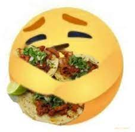
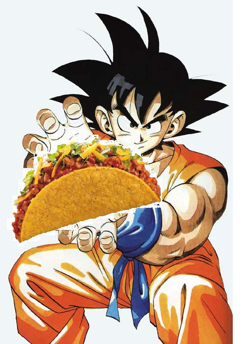
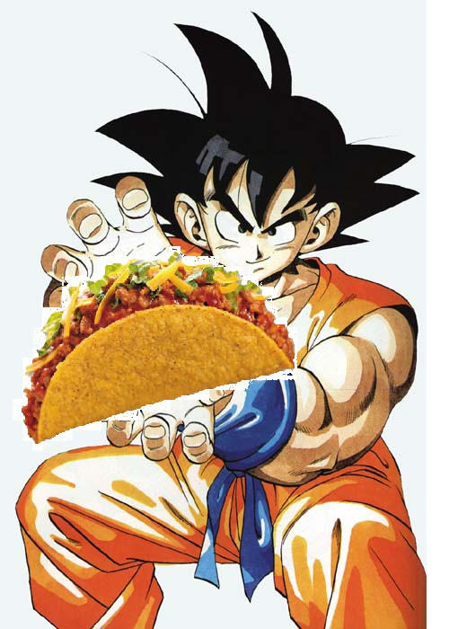

 

Ingredients needed to make tacos
- Cilantro
- Onion
- Yellow Corn Tortillas
- Quese de Chihuahua
- Paprika
- Cayenne Pepper
- Salt
- Black Pepper
- Limes
- Skirt Steak
Preparing the good stuff
- Begin by slicing the onion and cilantro into small little pieces
- Next, with the skirt steak, cut the steak into small little pieces, between the size of a pebble and bubblegum
- Medium heat the pan and put the steak inside, every minute move the steak around and after 4 minutes place in
the seasoning
- Once the steak has been cooked, which should be around 6-8 minutes, turn off the pan and with juices of the meat
inside of the pan, get you're yellow tortilla and soak it
- With the tortilla soaked, heat up the tortilla in another pan, medium heat, and flip it every minute until you
see black spots on the tortilla
- Once tortillas are cooked, place it back to the pan and place you're cheese on top. Fold tortilla once chesse
has been melted
- With everything done, place you're meat, onion, cilantro, and whatever condiments you want
- NOW ENJOY 😫😫😫 !!!